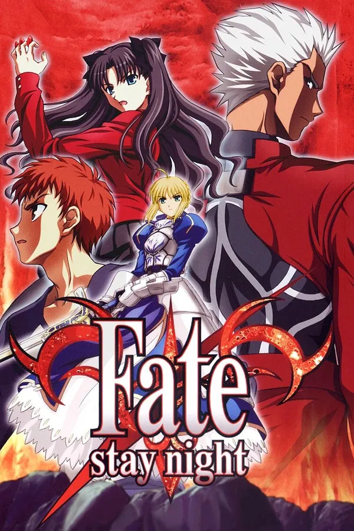

Fate/stay night (2006)
Primera adaptación animada del universo Fate. Sigue la Quinta Guerra del Santo Grial, donde magos invocan héroes legendarios para luchar por un deseo.

Primera adaptación animada del universo Fate. Sigue la Quinta Guerra del Santo Grial, donde magos invocan héroes legendarios para luchar por un deseo.

Adaptación moderna y fiel a la novela visual original, centrada en el arco Unlimited Blade Works y el conflicto entre ideales.

Trilogía de películas con un tono más oscuro, enfocada en Sakura Matou y los secretos ocultos de la Guerra del Santo Grial.
Precuela de Fate/stay night que narra la Cuarta Guerra del Santo Grial, destacando por su tono trágico y maduro.
Historia alternativa donde dos facciones, Roja y Negra, luchan en una guerra a gran escala por el Santo Grial.

Adaptación del videojuego móvil. La organización Chaldea viaja a distintas eras históricas para corregir singularidades y salvar a la humanidad.
Ambientada en Estados Unidos, presenta una “Guerra del Santo Grial falsa” donde las reglas están rotas y aparecen servants anómalos. Destaca por su caos, acción intensa y enfoque experimental.